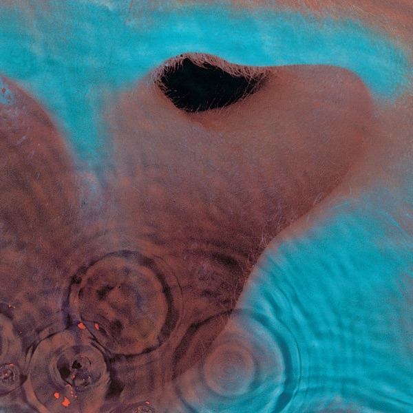

Meddle
Pink Floyd
Upgrade idea: This 2016 Pink Floyd Records / Sony remaster (BG pressing) is the recommended modern edition. No audiophile half-speed or 45RPM edition exists for Meddle. A true original 1971 UK Harvest (SHVL 795) first pressing is the collector's grail but runs $50–100+ in VG+ condition.
- Original release
- 1971
- Pressing year
- 2016
- Country
- US
- Format
- Vinyl LP, Album, Reissue, Remastered (Gatefold, 180 Gram)
- Label / Cat#
- Pink Floyd Records – PFRLP6 / Pink Floyd Records – 88875184231S1 / Pink Floyd Records – 88875184231
- Genres
- Rock
- Styles
- Psychedelic Rock, Prog Rock, Ethereal
- Discogs release
- 9092521
- Discogs master
- 20649
- Apple Music
- Meddle (2016 Remaster)
- Wikipedia
- Meddle
Production notes
Tracklist (Discogs)
| A1 | One Of These Days | 5:50 |
| A2 | A Pillow Of Winds | 5:10 |
| A3 | Fearless | 6:03 |
| A4 | San Tropez | 3:42 |
| A5 | Seamus | 2:09 |
| B | Echoes | 23:31 |
Tracklist (Apple Music)
| 1 | One of These Days | 5:55 |
| 2 | A Pillow of Winds | 5:13 |
| 3 | Fearless | 6:07 |
| 4 | San Tropez | 3:42 |
| 5 | Seamus | 2:14 |
| 6 | Echoes | 23:33 |
Personnel & credits
- Roger Waters — Bass Guitar, Vocals
- Pink Floyd — Composed By, Producer
- Hipgnosis (2) — Design [Album Cover]
- Pink Floyd — Design [Album Cover]
- John Leckie — Engineer [Air Studios, EMI Studios Abbey Road]
- Peter Bown — Engineer [Air Studios, EMI Studios Abbey Road]
- Robin Black — Engineer [Morgan Studios]
- Roger Quested — Engineer [Morgan Studios]
- David Gilmour — Guitar [Guitars], Vocals
- Richard Wright — Keyboards, Vocals
- Bernie Grundman — Lacquer Cut By
- Nick Mason — Percussion
- Hipgnosis (2) — Photography By [Inner Sleeve Photo]
- Robert Dowling — Photography By [Outer Sleeve Photos]
- Bernie Grundman — Remastered By
- James Guthrie — Remastered By
- Joel Plante — Remastered By
Identifiers
- Barcode: 8 88751 84231 1 (Text)
- Barcode: 888751842311 (Scanned)
- Other: 88875184231S1 (Sticker)
- Matrix / Runout: 88875184231A (Side A label)
- Matrix / Runout: PFRLP6-A (Side A label)
- Matrix / Runout: 88875184231B (Side B label)
- Matrix / Runout: PFRLP6-B (Side B label)
- Matrix / Runout: 0190295997076-A 16909 1A BG (Variant 1: side A runout)
- Matrix / Runout: 0190295997076-B B 16909 1B BG (Variant 1: side B runout)
- Matrix / Runout: 0190295997076-A 16909 1A BG (Variant 2: side A runout)
- Matrix / Runout: 0190295997076-B 16909 1B BG (Variant 2: side B runout)
- Matrix / Runout: 0190295997076-A B 16909 1A BG (Variant 3: side A runout)
- Matrix / Runout: 0190295997076-B C 16909 1B BG (Variant 3: side B runout)
- Matrix / Runout: 0190295997076-A B 16909 1A BG (Variant 4: side A runout)
- Matrix / Runout: 0190295997076-B D 16909 1B BG (Variant 4: side B runout)
- Matrix / Runout: 0190295997076-A 16909 1A BG (Variant 5: side A runout)
- Matrix / Runout: 0190295997076-B 16909 3B BG (Variant 5: side B runout)
- Matrix / Runout: 0190295997076-A B 16909 1A BG (Variant 6: side A runout)
- Matrix / Runout: 0190295997076-B 16909 1B BG (Variant 6: side B runout)
- Matrix / Runout: 0190295997076-A 16909 2A BG (Variant 7: side A runout)
- Matrix / Runout: 0190295997076-B 16909 3B BG (Variant 7: side B runout)
Notes
CAT# on sticker : 88875184231S1
Remastered from the original analogue tapes.
Textured gatefold jacket.
Recorded at Air Studios, EMI Studios Abbey Road and at Morgan Studios London 1971.
℗ 2016 The copyright in this sound recording is owned by Pink Floyd Music Ltd., marketed and distributed by Sony Music Entertainment. © 2016 Pink Floyd Music Ltd.
Publishing credits:
Side A: Published by Pink Floyd Music Publishers Ltd. administered by Imagem UK Ltd./Roger Waters Music Overseas Ltd., administered by BMG Rights Management (UK) Ltd., except track 4 published by Roger Waters Music Overseas Ltd., administered by BMG Rights Management (UK) Ltd. for the world excluding USA & Canada. USA & Canada: TRO-Hampshire House Publishing Corp. Fearless includes 'You'll Never Walk Alone' published by Chappell Music Ltd. for the world
Side B: Published By Pink Floyd Music Publishers Ltd. administered by Imagem UK Ltd./Roger Waters Music Overseas Ltd., administered by BMG Rights Management (UK) Ltd. for the world excluding USA & Canada. USA & Canada: TRO-Hampshire House Publishing Corp.
Runouts: "16909 #$" (where # is a number and $='A' or 'B') is stamped; the rest is etched.
Notes & discrepancies
- Release year differs: your pressing=2016, Apple Music edition=1971. Apple Music typically streams the most recent remaster.
Pink Floyd’s sixth album (1971) — the bridge between their psychedelic origins and the DSOTM era. Side two is entirely “Echoes,” the 23-minute suite that anticipates everything that came after. 2016 remaster on Pink Floyd Records / Sony (PFRLP6), pressed at Bontje Graafland (BG), Netherlands. Matrix 0190295997076 / 16909 BG. A significant upgrade over earlier budget reissues.